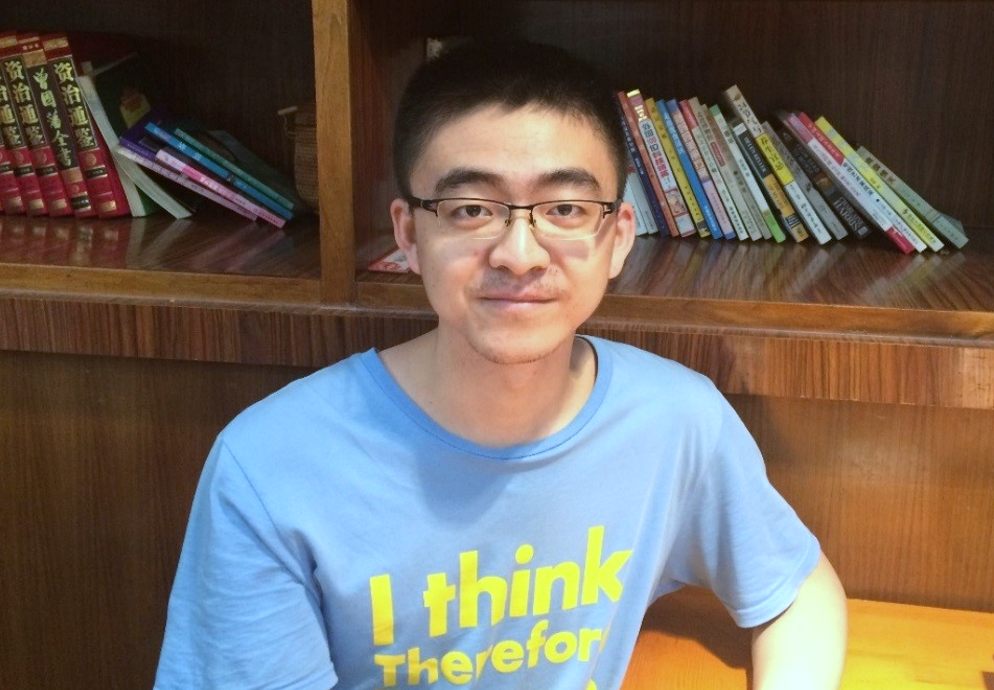

Peize Sun 孙培泽Ph.D. StudentDepartment of Computer Science The University of Hong Kong Email: sunpeize AT foxmail DOT com
|
 |
Biography
I am a fourth-year (2020-now) Ph.D. student in Department of Computer Science, The University of Hong Kong, advised by Prof. Ping Luo. My research experience is about computer vision and deep learning, previously focusing on object-level visual recognition, and now towards multimodal foundation models.
I obtained my bachelor and master degree from Electrical Engineering Department, Xi'an Jiaotong University. I interned at Megvii(Face++, Beijing, China), ByteDance(Beijing, China), Meta(Facebook, Menlo Park, USA) and Cruise(Sunnyvale, USA).
I am currently seeking a research job position starting from Spring 2024, please feel free to contact me if you are interested in my research.
Publications (show selected / show all)
Honors
- Research Postgraduate Student Innovation Award, 2023
- Hong Kong PhD Fellowship, 2020 - 2024
- Chiang Chen Enterprise Scholarship, 2017, 2018
- First-class Academic Scholarship, 2018
- First-class Recommended Postgraduate Scholarship, 2017
- National Scholarship, 2016
- National Endeavor Scholarship, 2014, 2015
Academic Service
- Conference Workshop: Multiple Object Tracking and Segmentation in Complex Environments Workshop, ECCV 2022
- Conference Review: Conference on Computer Vision and Pattern Recognition (CVPR) International Conference on Computer Vision (ICCV) European Conference on Computer Vision (ECCV) Conference on Neural Information Processing Systems (NeurIPS)
- Journal Review: International Journal of Computer Vision Transactions on Image Processing Transactions on Multimedia Transactions on Intelligent Transportation Systems Transactions on Circuits and Systems for Video Technology Journal of Neurocomputing Journal of Visual Communication and Image Representation
| © Peize Sun | Last update: October 2023 |